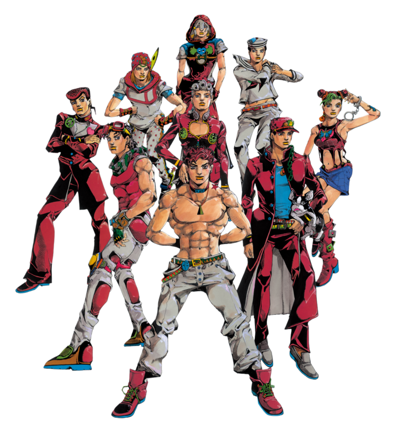
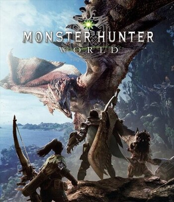

Hi, my name is Mallow, or Mal, or Mal0, depending on where you see me at.
I am from Felicity Ohio, in the United States. I have a siamese cat named Tillie
and a dog named Aries.
My hobbies include both traditional and digital art, crocheting,
cross stitching, basket weaving, video games, and now coding!
This website is my first real project, and will help me stick to
my goal to learn to code websites.
My favorite shows in order are:
I don't watch a lot of TV so the list is fairly short, but these shows
are by far my favorites!
I couldn't possibly rank my favorite games, so they aren't in any order:
In case you're curious, here are my respective favorites visually!

